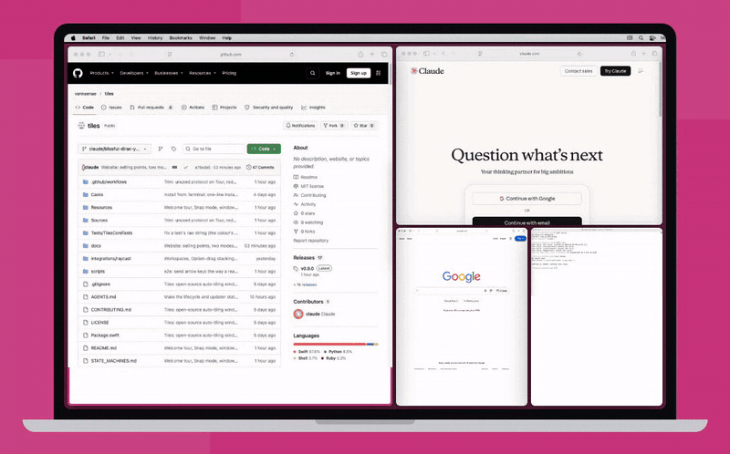
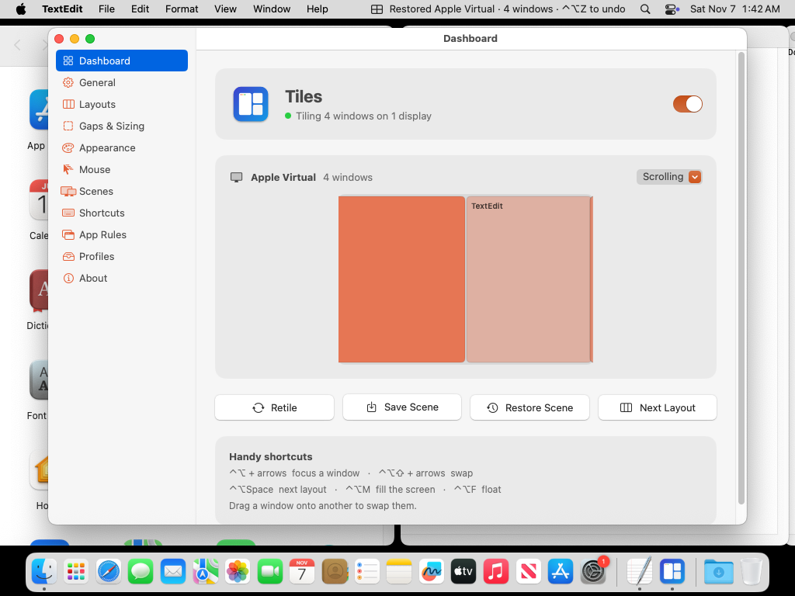
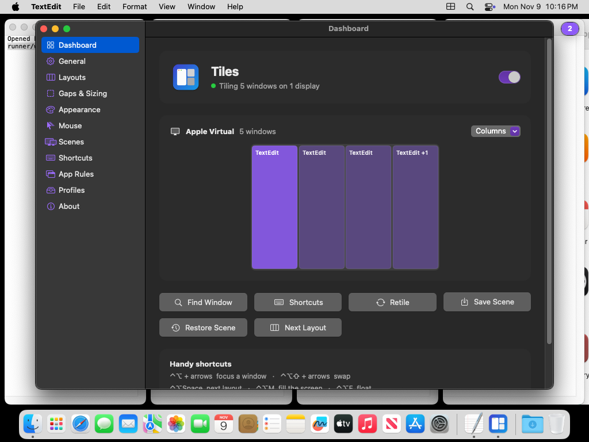

Every window,
in its place.
Tiles is a free, open-source window manager for Mac. Windows snap into tiles the moment they open, every screen gets the right layout, and your desk setup comes back when you dock.
curl -fsSL https://github.com/vannaenae/tiles/releases/latest/download/install.sh | bashPaste into Terminal. Or download the app. macOS 13 or later · Apple silicon and Intel · Free forever

Try the layouts
The same layout maths the app uses. Pick a screen, a layout, and add windows.
Built for the screens you use
From a 13" laptop to a 49" super-ultrawide, with one keyboard shortcut for everything.
11 layouts
Dwindle, Master & Stack, Centered Master, Columns, Thirds, Grid, Scrolling and more, per display.
Scrolling
Windows keep their width in a row wider than the screen. Focus one, or hold ⌃⌥ and swipe, and the row slides.
Docking scenes
Unplug for the laptop layout, plug in and the desk layout returns. One shortcut undoes it.
Drag to arrange
Drop a window on another to swap them, or hold ⌥ to stack them. Drag an edge and the split follows.
Workspaces
Nine per display. ⌃⌘2 to switch, ⌃⌥⌘2 to send a window. No need to disable SIP.
Keyboard first
50+ shortcuts, all remappable, plus a tiles command, tiles:// links and ready-made Raycast commands.
Yours to style
Light or dark, five colour themes, a focus outline, and profiles to switch whole setups.
App rules
Send Slack to the laptop and Xcode to the main tile on your monitor. Float anything that shouldn't tile.
Private
Reads window positions and app names, nothing else. No screen recording, no analytics, no account.
A real Mac app
A dashboard that shows your displays live, and settings for everything. Screenshots from a real Mac.


Handy shortcuts
Most use ⌃⌥ (Control + Option), and every one can be changed.
| ⌃⌥ + arrows | Focus the window in that direction |
| ⌃⌥⇧ + arrows | Swap with the window in that direction |
| ⌃⌥Space | Next layout |
| ⌃⌥M | Let the focused window fill the screen, press again to put it back |
| ⌃⌥W | Scrolling: cycle the window's width |
| ⌃⌥F | Float or tile the focused window |
| ⌃⌘1–5 | Switch workspace; add ⌥ to send the window there |